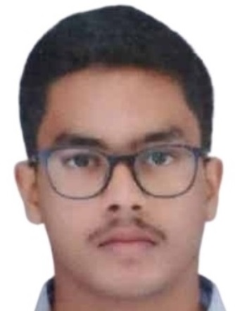

Dhayanithi G

Summary
Recent English Literature graduate with strong leadership and discipline developed through NCC training,
holding a C Certificate with an A grade.
Represented at the All India Shooting Competition (2024), showcasing focus, resilience, and teamwork.
Completed certifications in Full-Stack Web Development and beginner-level Ethical Hacking on Udemy,
building a foundation in modern web technologies and cybersecurity practices.
Eager to apply communication skills, technical knowledge,
and dedication to learning in entry-level opportunities across IT, cybersecurity, or content-focused roles.
Education
- Degree - BA ENG literature at thiagarajer collage, madurai (2022-2025)
- School - 10th and 12th at St mary's hss, madurai(2018 & 2021)
Work experience
Skill
Technical skill
- Full-Stack Web Development (HTML, CSS, JavaScript, Node.js, Databases)
- Beginner-level Ethical Hacking & Cybersecurity Fundamentals
- Computer Literacy & Internet Research
- Basic Networking Concepts
Soft Skills
- Strong Communication & Writing (English Literature background)
- Leadership & Teamwork (NCC C Certificate, A Grade)
- Discipline & Time Management
- Problem-Solving & Analytical Thinking
- Focus & Precision (All India Shooting Competition, 2024)
Acheivemets
NCC Certification
National Recognition
Shooting Competitions
- Won Gold Medal and 2 Silver Medals in State Shooting Match (2023).
- Secured Gold Medal in IDSSC Firing Competition (2025).
- Represented at the All India Shooting Competition (2024).
Training & Camps
Technical Certifications
- Completed Full-Stck Advanced Web Development Course (Udemy).
- Completed Ethical Hacking (Beginner) course (Udemy).
Contact me